Gradle
Apache Kafka
passedScenarios
-
passed import-test-fixtures mbt-import · 138.1 s
Screenshots (5)
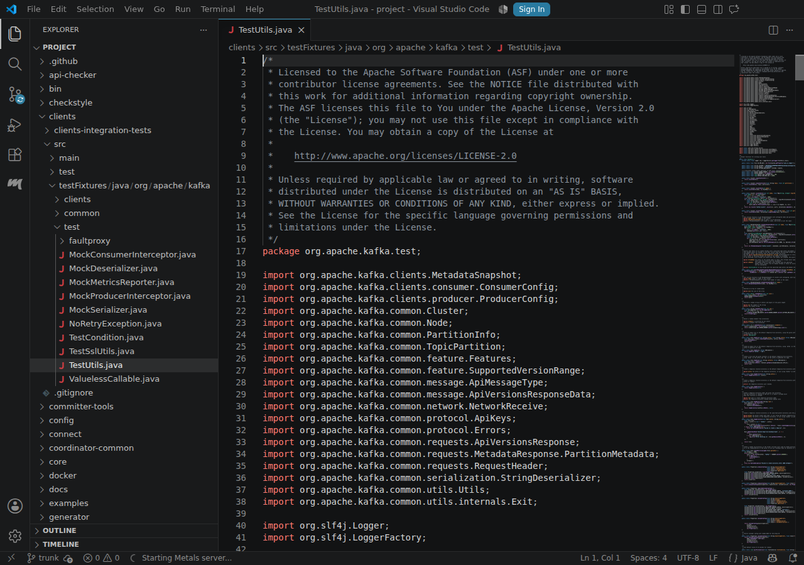
001-file-opened.png 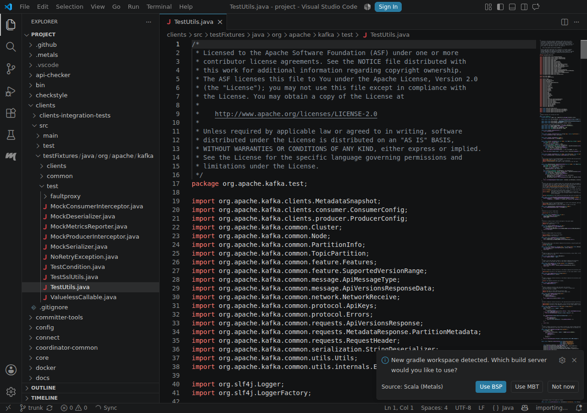
002-build-server-prompt.png 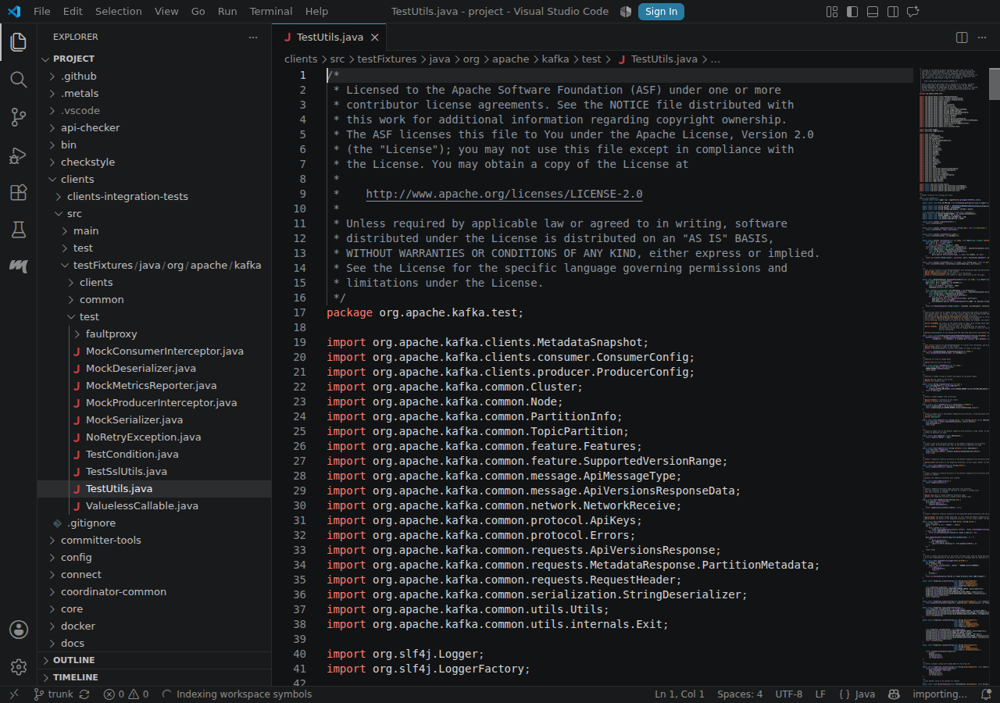
003-mbt-selected.png 004-mbt-imported.png 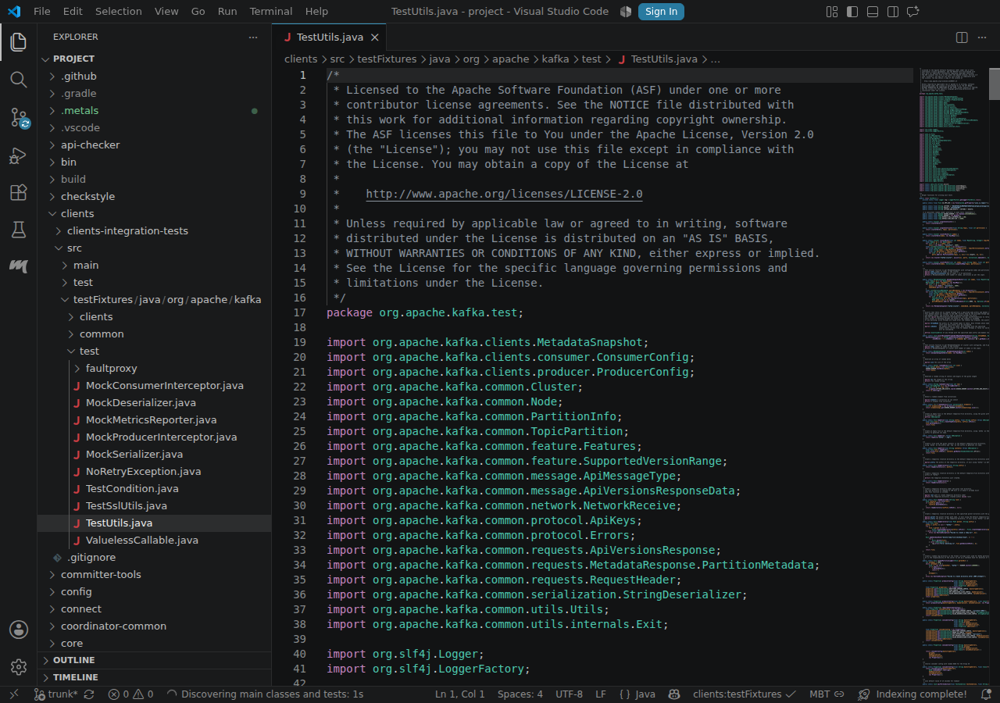
005-import-verified.png -
passed test-fixtures-target java-diagnostics · 13.9 s
Screenshots (3)
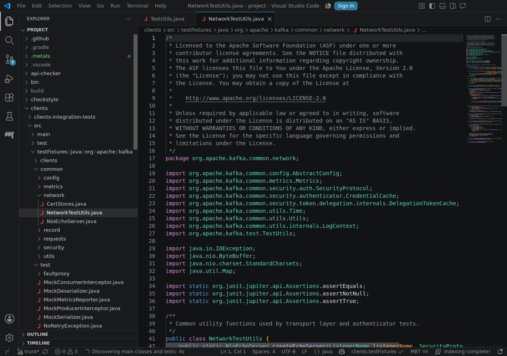
001-file-opened.png 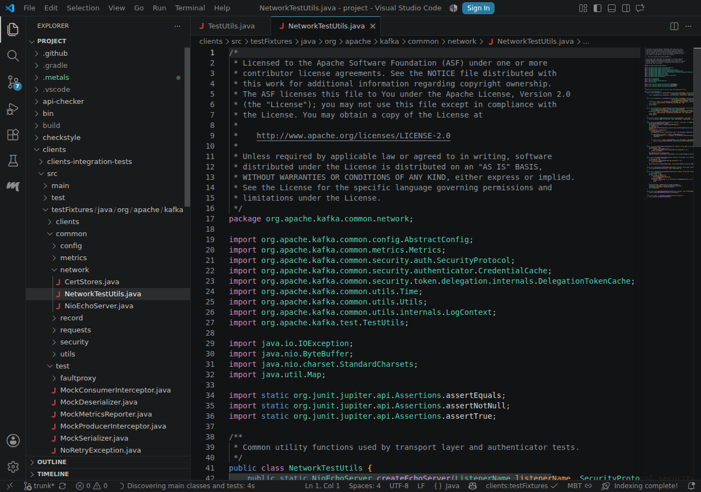
002-mbt-session-reused.png 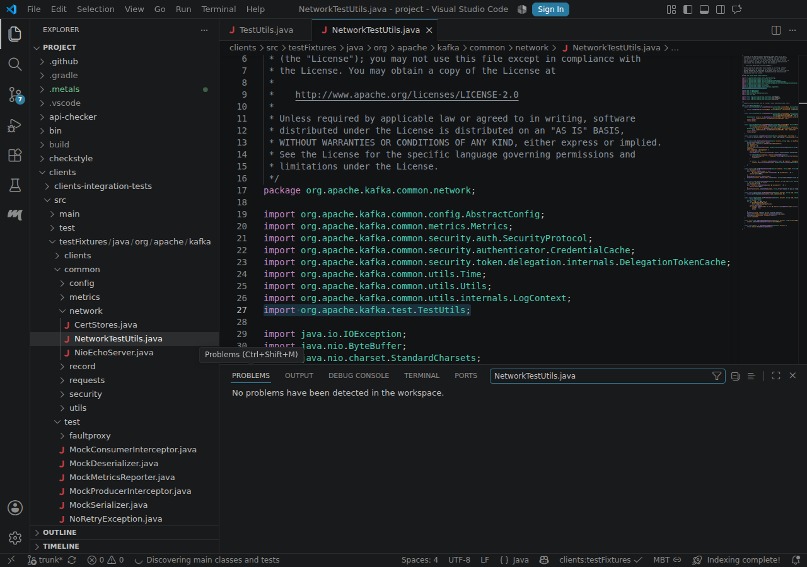
003-imports-resolved.png -
passed scala-to-java-definition go-to-definition · 8.6 s
Screenshots (4)
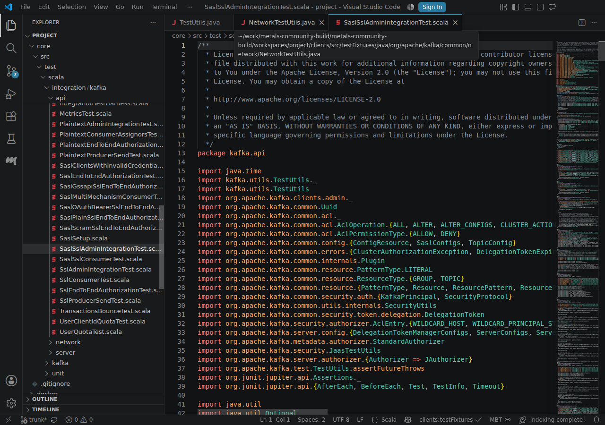
001-file-opened.png 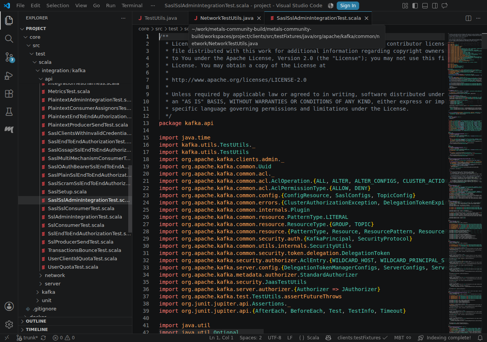
002-mbt-session-reused.png 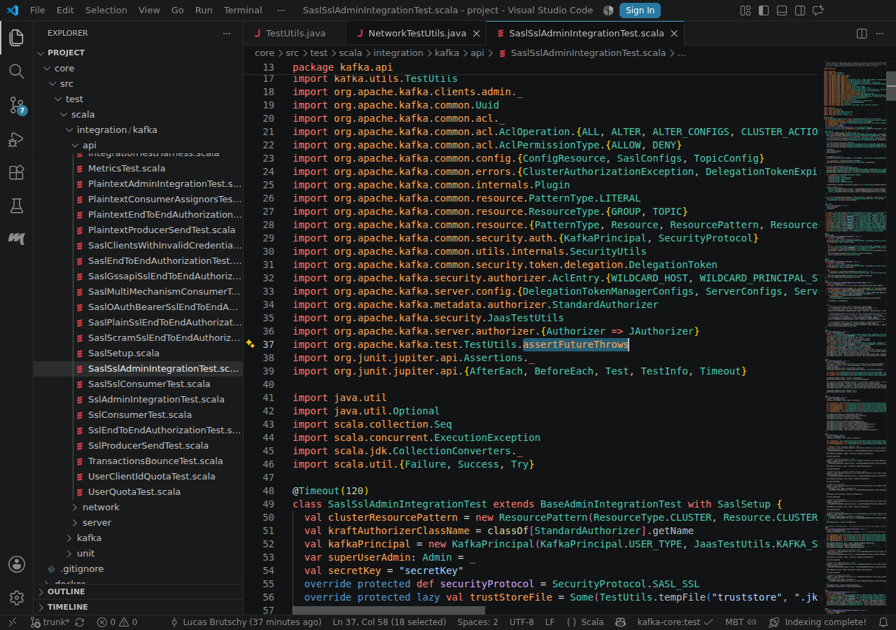
003-definition-symbol-selected.png 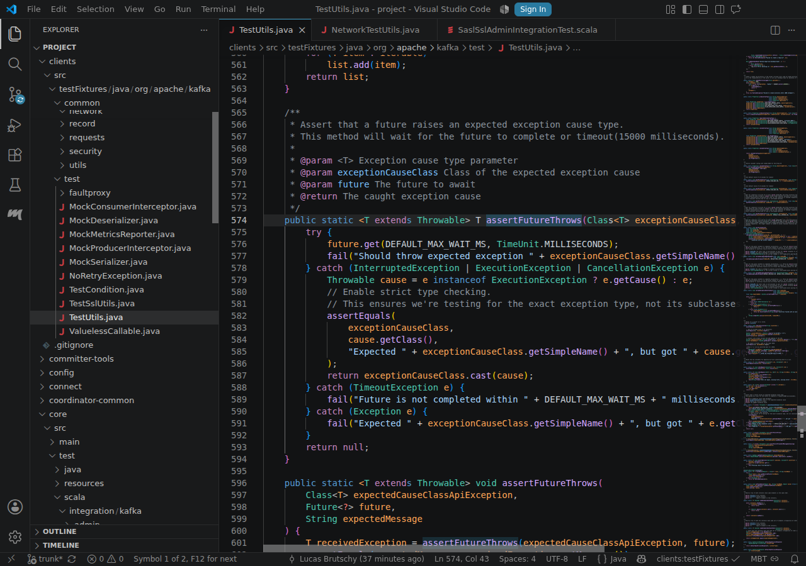
004-definition-verified.png


MBT model
154 namespaces
477 dependencies
0 unchecked sources